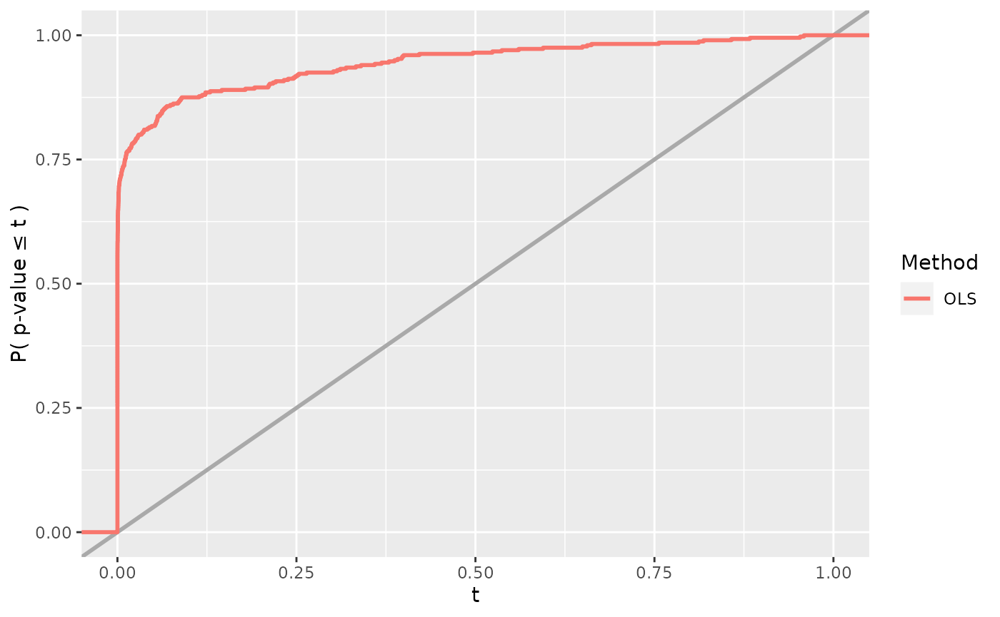
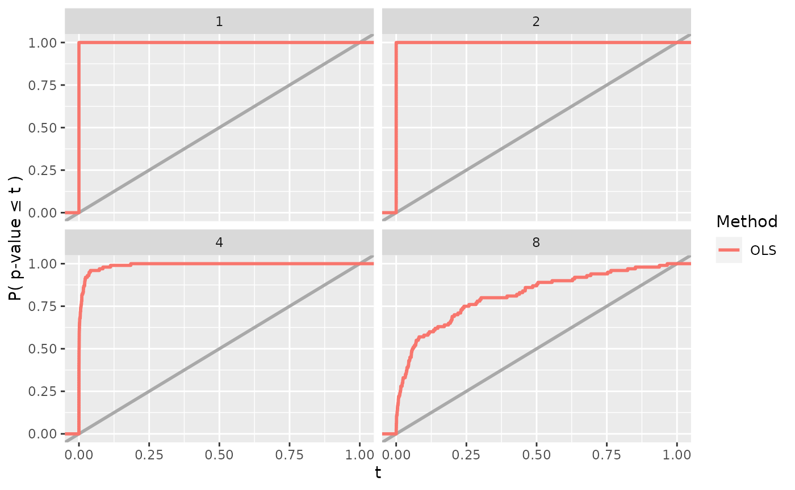

simChef.RmdThe goal of simChef is to seamlessly and efficiently run simulation experiments using a simple grammar. The results of these simulation experiments can also be conveniently viewed in an organized and interactive browser (or html file) (e.g., here). The basic usage of simChef can be summarized as follows:
create_dgp()
create_method()
create_evaluator()
create_visualizer()
experiment <- create_experiment(name = "Experiment") %>%
add_dgp(dgp, name = "DGP1") %>%
add_method(method, name = "Method1") %>%
add_evaluator(evaluator, name = "Evaluator1") %>%
add_visualizer(visualizer, name = "Visualizer1")
create_doc_template(experiment)
results <- experiment$run(n_reps = 100, save = T)
# or alternatively, `run_experiment(experiment, n_reps = 100, save = T)`
create_rmd(experiment)We will next go through a toy example simulation using linear regression.
To begin, we first need to create the individual parts of the simulation experiment recipe. There are four main components/classes and verbs in the simulation experiment:
To create a DGP(), Method(), Evaluator(), or Visualizer(), we can respectively use the create_dgp(), create_method(), create_evaluator(), or create_visualizer() functions. Each create_*() function follows the same syntax and takes in the inputs:
.*_fun: the first input is a function from which to simulate data, fit the method, evaluate the metrics, or create a visualization (depending on *)..name: (optional) name of the component. Can be specified either here in create_*() or when creating the experiment as we will see later....: additional arguments get passed into the *_fun above.As a toy DGP example, let us create a function to simulate a random Gaussian data matrix \(\mathbf{X}\) of size \(n \times 2\) and a linear response vector \(\mathbf{y}\) of size \(n \times 1\), where
\[\begin{gather*} \mathbf{X} \sim N\left(\mathbf{0}, \begin{pmatrix} 1 & \rho \\ \rho & 1 \end{pmatrix}\right), \\ \mathbf{y} = \mathbf{X} \boldsymbol{\beta} + \boldsymbol{\epsilon},\\ \boldsymbol{\epsilon} \sim N(\mathbf{0}, \sigma^2 \mathbf{I}_n) \end{gather*}\]
dgp_fun <- function(n, beta, rho, sigma) {
cov_mat <- matrix(c(1, rho, rho, 1), byrow = T, nrow = 2, ncol = 2)
X <- MASS::mvrnorm(n = n, mu = rep(0, 2), Sigma = cov_mat)
y <- X %*% beta + rnorm(n, sd = sigma)
return(list(X = X, y = y))
}We can create an object of class DGP() from this function via
dgp <- create_dgp(.dgp_fun = dgp_fun, .name = "Linear Gaussian DGP",
# additional named parameters to pass to dgp_fun()
n = 200, beta = c(1, 0), rho = 0, sigma = 1)Note that the additional arguments in create_dgp() must be named arguments that match those in dgp_fun().
Given the above DGP, suppose we want to investigate the performance of linear regression, specifically the p-values that are outputted for the non-intercept coefficients from summary.lm().
lm_fun <- function(X, y, cols = c("X1", "X2")) {
lm_fit <- lm(y ~ X)
pvals <- summary(lm_fit)$coefficients[cols, "Pr(>|t|)"] %>%
setNames(paste(names(.), "p-value"))
return(pvals)
}We can create an object of class Method() from this function via
lm_method <- create_method(.method_fun = lm_fun)A couple notes here:
lm_fun() should include the named outputs from the DGP function dgp_fun() (in this case, X and y), as the data generated from the DGP will be automatically passed into the Method.create_method() as was done previously in create_dgp(). However, this is not necessary in this case if we are happy with the default argument for cols in lm_fun().To evaluate the performance of linear regression, one metric (or statistic) of interest could be the rejection probability at some level \(\alpha\), which we compute in the following function.
reject_prob_fun <- function(fit_results, alpha = 0.05) {
group_vars <- c(".dgp_name", ".method_name")
eval_out <- fit_results %>%
dplyr::group_by(across({{group_vars}})) %>%
dplyr::summarise(
`X1 Reject Prob.` = mean(`X1 p-value` < alpha),
`X2 Reject Prob.` = mean(`X2 p-value` < alpha)
)
return(eval_out)
}We can create an object of class Evaluator() from this function via
reject_prob_eval <- create_evaluator(.eval_fun = reject_prob_fun, alpha = 0.1)There are a few key points to keep in mind when writing a custom Evaluator function such as reject_prob_fun().
fit_results. fit_results is a placeholder for the tibble that will be outputted by Experiment$fit() and automatically passed in when the experiment is fitted. Note that this argument must be exactly named fit_results or else the Evaluator function will not receive the results from Experiment$fit(). We will see Experiment$fit() in action later, but for now, we can think of fit_results as a tibble containing the results of all (replicate, DGP, method) combinations fitted in the experiment. Naturally, fit_results will have columns named .rep, .dgp_name, .method_name, and any other named arguments that were outputted from the method function (i.e., lm_fun).fit_results by .dgp_name and .method_name as seen in reject_prob_fun() above. In doing so, the rejection probability (across replicates) will be computed for each (DGP, Method) combination separately. However, depending on the goal of the Evaluator function, grouping by .dgp_name and .method_name might not be necessary.As before, additional arguments can be passed into create_evaluator(), and in this case, we have overwritten the default value of alpha with alpha = 0.1.
Lastly, we may want to plot the results from the Method fits (stored in fit_results) and/or the outputs from our Evaluators (stored in eval_results). For example, we could plot the power of the hypothesis test.
power_plot_fun <- function(fit_results, col = "X1") {
plt <- ggplot2::ggplot(fit_results) +
ggplot2::aes(x = .data[[paste(col, "p-value")]],
color = as.factor(.method_name)) +
ggplot2::geom_abline(slope = 1, intercept = 0,
color = "darkgray", linetype = "solid", size = 1) +
ggplot2::stat_ecdf(size = 1) +
ggplot2::scale_x_continuous(limits = c(0, 1)) +
ggplot2::labs(x = "t", y = "P( p-value \u2264 t )",
linetype = "", color = "Method")
return(plt)
}We can create an object of class Visualizer() from this function via
power_plot <- create_visualizer(.viz_fun = power_plot_fun)Like the custom Evaluator functions, custom Visualizer functions such as power_plot_fun() can take in the argument fit_results if we want to construct a plot from the method fit outputs. If we want to construct a visualization using the output of our Evaluators (e.g., the output from reject_prob_fun()), the Visualizer function can also take the argument eval_results as input. Note again that the arguments must be exactly named fit_results and eval_results in order to work properly. Beyond creating plots, Visualizers can return tables and more generally, any R Markdown snippet containing results.
As with the other create_* functions, additional arguments that need to pass into the custom Visualizer function can be passed into create_visualizer().
At this point, we have created a DGP (dgp), Method (lm_method), Evaluator (reject_prob_eval), and Visualizer (power_plot). The next step is to create the simulation experiment recipe and add each component to the recipe via
experiment <- create_experiment(name = "Linear Regression Experiment") %>%
add_dgp(dgp, name = "Linear Gaussian DGP") %>%
add_method(lm_method, name = "OLS") %>%
add_evaluator(reject_prob_eval, name = "Rejection Prob. (alpha = 0.1)") %>%
add_visualizer(power_plot, name = "Power")Any number of DGPs, Methods, Evaluators, and Visualizers can be added to the simulation experiment recipe, but each added element to the experiment should have an intelligible name as this will be used in creating the R Markdown results report.
We can easily see the individual parts of the simulation experiment recipe by printing the experiment.
print(experiment)
#> Experiment Name: Linear Regression Experiment
#> Saved results at: results/Linear Regression Experiment
#> DGPs: Linear Gaussian DGP
#> Methods: OLS
#> Evaluators: Rejection Prob. (alpha = 0.1)
#> Visualizers: Power
#> Vary Across: NoneOnce a DGP, Method, Evaluator, or Visualizer has been added to the simulation experiment recipe, the component can be updated using update_dgp(), update_method(), update_evaluator(), or update_visualizer() and removed using remove_dgp(), remove_method(), remove_evaluator(), or remove_visualizer().
A crucial component when running veridical simulations is documentation. We highly encourage practitioners to document the purpose or objective of the simulation experiment, what DGPs, Methods, Evaluators, and Visualizers were used, and why these DGPs, Methods, Evaluators, and Visualizers were chosen. This can and should be done before even running the simulation experiment. To facilitate this tedious but important process, we can easily create a documentation template to fill out using
create_doc_template(experiment)This creates a series of blank .md files for the user to fill out with descriptions of the simulation experiment and its recipe components. These blank .md files can be found in the experiment’s root results directory under docs/. To find the experiment’s root results directory, use experiment$get_save_dir().
Thus far, we have created and documented the simulation experiment recipe, but we have not generated any results from the experiment. That is, we have only given the simulation experiment instructions on what to do. To run the experiment, say over 100 replicates, we can do so via
results <- experiment$run(n_reps = 100, save = TRUE)
#> Fitting Linear Regression Experiment...
#> 100 reps completed (totals: 100/100) | time taken: 0.026027 minutes
#> Saving fit results...
#> Fit results saved | time taken: 0.054359 seconds
#> ==============================
#> Evaluating Linear Regression Experiment...
#> `summarise()` has grouped output by '.dgp_name'. You can override using the `.groups` argument.
#> Evaluation completed | time taken: 0.000387 minutes
#>
#> Saving eval results...
#>
#> Eval results saved | time taken: 0.185464 seconds
#>
#> ==============================
#>
#> Visualizing Linear Regression Experiment...
#>
#> Visualization completed | time taken: 0.001911 minutes
#>
#> Saving viz results...
#>
#> Viz results saved | time taken: 0.063054 seconds
#>
#> ==============================or alternatively,
results <- experiment %>%
run_experiment(n_reps = 100, save = TRUE)The output of experiment$run() is a list of length three:
fit_results: output of Method fits (see experiment$fit())eval_results: output of Evaluators (see experiment$evaluate())viz_results: output of Visualizers (see experiment$visualize())
str(results, max.level = 2)
#> List of 3
#> $ fit_results : tibble [100 × 5] (S3: tbl_df/tbl/data.frame)
#> $ eval_results:List of 1
#> ..$ Rejection Prob. (alpha = 0.1): tibble [1 × 4] (S3: tbl_df/tbl/data.frame)
#> $ viz_results :List of 1
#> ..$ Power:List of 9
#> .. ..- attr(*, "class")= chr [1:2] "gg" "ggplot"
results$fit_results
#> # A tibble: 100 × 5
#> .rep .dgp_name .method_name `X1 p-value` `X2 p-value`
#> <chr> <chr> <chr> <dbl> <dbl>
#> 1 1 Linear Gaussian DGP OLS 4.90e-29 0.704
#> 2 2 Linear Gaussian DGP OLS 4.28e-28 0.713
#> 3 3 Linear Gaussian DGP OLS 1.60e-38 0.680
#> 4 4 Linear Gaussian DGP OLS 2.31e-29 0.0115
#> 5 5 Linear Gaussian DGP OLS 8.08e-33 0.127
#> 6 6 Linear Gaussian DGP OLS 8.95e-29 0.980
#> 7 7 Linear Gaussian DGP OLS 6.84e-33 0.385
#> 8 8 Linear Gaussian DGP OLS 6.60e-29 0.116
#> 9 9 Linear Gaussian DGP OLS 4.16e-28 0.765
#> 10 10 Linear Gaussian DGP OLS 1.28e-21 0.530
#> # … with 90 more rows
results$eval_results
#> $`Rejection Prob. (alpha = 0.1)`
#> # A tibble: 1 × 4
#> .dgp_name .method_name `X1 Reject Prob.` `X2 Reject Prob.`
#> <chr> <chr> <dbl> <dbl>
#> 1 Linear Gaussian DGP OLS 1 0.12
results$viz_results
#> $PowerBy default, the results are not saved to disk. However, to generate the R Markdown report, we will need to save the results to disk and hence set save = TRUE above.
The experiment can also be run in parallel. For a more detailed walkthrough on how to parallelize the experiment, please see vignette("parallel").
Finally, we can easily visualize all results from the simulation experiment in an html file (generated using R Markdown) or browser.
create_rmd(experiment, open = FALSE)
#> Creating R Markdown report for Linear Regression Experiment...The results can be found here.
Note that if the documentation template has not yet been created for experiment (e.g., via create_doc_template(experiment)), then create_rmd() will automatically create the documentation template for the user to fill out. Again, we highly encourage practitioners to document their simulation experiments in the spirit of transparency and reproducibility.
Now, going slightly beyond the most basic usage of simChef, it is often helpful to understand how a method’s performance is affected as we vary a single parameter in the DGP across different values. For instance, what happens to the power as the amount of noise in the linear model increases?
Using the simple grammar of simChef, we can investigate this question by adding a “vary across” component to the simulation experiment.
experiment <- experiment %>%
add_vary_across(.dgp = "Linear Gaussian DGP", sigma = c(1, 2, 4, 8))
print(experiment)
#> Experiment Name: Linear Regression Experiment
#> Saved results at: results/Linear Regression Experiment
#> DGPs: Linear Gaussian DGP
#> Methods: OLS
#> Evaluators: Rejection Prob. (alpha = 0.1)
#> Visualizers: Power
#> Vary Across:
#> DGP: Linear Gaussian DGP
#> sigma: num [1:4] 1 2 4 8In add_vary_across(), the dgp argument is the name of the DGP to vary or the DGP object itself. All subsequent arguments should be of the form [param_name] = [param_values], where param_name is the name of the argument/parameter in the DGP function that will be varied, and param_values is a list or atomic vector of values that param_name will take and vary across while all other arguments are kept constant at their base value (see dgp$dgp_params). Here, we are varying the sigma parameter (i.e., the SD of the additive noise term) over values of 1, 2, 4, and 8 within the Linear Gaussian DGP. (Note: we can also vary across parameters in a Method by inputting the method argument instead of the dgp argument in add_vary_across().)
However, when we run the experiment, the results are not quite what we expect. The results are summarized/aggregated across all values of sigma.
vary_results <- experiment$run(n_reps = 100, save = TRUE)
#> Fitting Linear Regression Experiment...
#> 100 reps completed (totals: 100/100) | time taken: 0.070929 minutes
#> Saving fit results...
#> Fit results saved | time taken: 0.047772 seconds
#> ==============================
#> Evaluating Linear Regression Experiment...
#> Evaluation completed | time taken: 0.000334 minutes
#> Saving eval results...
#> Eval results saved | time taken: 0.037467 seconds
#> ==============================
#> Visualizing Linear Regression Experiment...
#> Visualization completed | time taken: 0.000388 minutes
#> Saving viz results...
#> Viz results saved | time taken: 0.079165 seconds
#> ==============================
vary_results$eval_results
#> $`Rejection Prob. (alpha = 0.1)`
#> # A tibble: 1 × 4
#> .dgp_name .method_name `X1 Reject Prob.` `X2 Reject Prob.`
#> <chr> <chr> <dbl> <dbl>
#> 1 Linear Gaussian DGP OLS 0.875 0.112
vary_results$viz_results
#> $Power
To see how different values of sigma affect the experiment results, we need to modify our Evaluator and Visualizer functions. Specifically, in reject_prob_eval, we want to group fit_results by sigma in addition to .dgp_name and .method_name. To do this, we need to add a vary_params argument to our custom Evaluator function. When we run the experiment, vary_params will be auto-filled by a vector of the parameter names that are varied (i.e., those that have been added via add_vary_across()). In this case, vary_params will be auto-filled by c("sigma").
reject_prob_fun <- function(fit_results, vary_params = NULL, alpha = 0.05) {
group_vars <- c(".dgp_name", ".method_name", vary_params)
eval_out <- fit_results %>%
dplyr::group_by(across({{group_vars}})) %>%
dplyr::summarise(
`X1 Reject Prob.` = mean(`X1 p-value` < alpha),
`X2 Reject Prob.` = mean(`X2 p-value` < alpha)
)
return(eval_out)
}
reject_prob_eval <- create_evaluator(.eval_fun = reject_prob_fun, alpha = 0.1)Similarly in power_plot_fun, we need to add a vary_params argument to plot the results across different values of sigma.
power_plot_fun <- function(fit_results, vary_params = NULL, col = "X1") {
if (!is.null(vary_params)) {
# deal with the case when we vary across a parameter that is vector-valued
if (is.list(fit_results[[vary_params]])) {
fit_results[[vary_params]] <- list_col_to_chr(fit_results[[vary_params]],
name = vary_params,
verbatim = TRUE)
}
}
plt <- ggplot2::ggplot(fit_results) +
ggplot2::aes(x = .data[[paste(col, "p-value")]],
color = as.factor(.method_name)) +
ggplot2::geom_abline(slope = 1, intercept = 0,
color = "darkgray", linetype = "solid", size = 1) +
ggplot2::stat_ecdf(size = 1) +
ggplot2::scale_x_continuous(limits = c(0, 1)) +
ggplot2::labs(x = "t", y = "P( p-value \u2264 t )",
linetype = "", color = "Method")
if (!is.null(vary_params)) {
plt <- plt + ggplot2::facet_wrap(~ .data[[vary_params]])
}
return(plt)
}
power_plot <- create_visualizer(.viz_fun = power_plot_fun)Here, we have also added a pre-processing step to deal with the potential case when we vary across a list of parameter values. This pre-processing step uses a helper function, list_col_to_chr(), to convert a list-type tibble column to a character-type tibble column that is amenable for plotting (unlike the list-type column).
Now, we are ready to update our experiment and run the experiment via
vary_results <- experiment %>%
update_evaluator(reject_prob_eval, name = "Rejection Prob. (alpha = 0.1)") %>%
update_visualizer(power_plot, name = "Power") %>%
run_experiment(n_reps = 100, save = TRUE)
#> Fitting Linear Regression Experiment...
#> 100 reps completed (totals: 100/100) | time taken: 0.072855 minutes
#> Saving fit results...
#> Fit results saved | time taken: 0.063524 seconds
#> ==============================
#> Evaluating Linear Regression Experiment...
#> Evaluation completed | time taken: 0.000229 minutes
#> Saving eval results...
#> Eval results saved | time taken: 0.047416 seconds
#> ==============================
#> Visualizing Linear Regression Experiment...
#> Visualization completed | time taken: 0.000447 minutes
#> Saving viz results...
#> Viz results saved | time taken: 0.094637 seconds
#> ==============================
vary_results$eval_results
#> $`Rejection Prob. (alpha = 0.1)`
#> # A tibble: 4 × 5
#> .dgp_name .method_name sigma `X1 Reject Prob.` `X2 Reject Prob.`
#> <chr> <chr> <dbl> <dbl> <dbl>
#> 1 Linear Gaussian DGP OLS 1 1 0.08
#> 2 Linear Gaussian DGP OLS 2 1 0.12
#> 3 Linear Gaussian DGP OLS 4 0.98 0.08
#> 4 Linear Gaussian DGP OLS 8 0.58 0.11
vary_results$viz_results
#> $Power
Note here we need to use update_* instead of add_* since an Evaluator named “Rejection Prob. (alpha = 0.1)” and a Visualizer named “Power” already exist in the Experiment. Using add_* will throw an error.
For fun, let’s add another plot (in fact, an interactive plot using plotly::ggplotly) to our Experiment and run the Experiment across various values of the coefficient \(\boldsymbol{\beta}_2\) and the correlation \(\rho\) between features in \(\mathbf{X}\). (Note: the visualizer function below (reject_prob_plot_fun) takes in the Evaluator results, stored as eval_results, and plots the rejection probability for the \(\boldsymbol{\beta}_1\) at \(\alpha = 0.1\).)
# create rejection probability plot
reject_prob_plot_fun <- function(eval_results, vary_params = NULL,
alpha = 0.05) {
eval_results <- eval_results$`Rejection Prob. (alpha = 0.1)`
if (is.list(eval_results[[vary_params]])) {
# deal with the case when we vary across a parameter that is vector-valued
eval_results[[vary_params]] <- list_col_to_chr(eval_results[[vary_params]],
name = vary_params,
verbatim = TRUE)
}
plt <- ggplot2::ggplot(eval_results) +
ggplot2::aes(x = .data[[vary_params]], y = `X1 Reject Prob.`,
color = as.factor(.method_name),
fill = as.factor(.method_name)) +
ggplot2::labs(x = vary_params,
y = sprintf("Rejection Probability (alpha = %s)", alpha),
color = "Method", fill = "Method") +
ggplot2::scale_y_continuous(limits = c(0, 1))
if (is.numeric(eval_results[[vary_params]])) {
plt <- plt +
ggplot2::geom_line() +
ggplot2::geom_point(size = 2)
} else {
plt <- plt +
ggplot2::geom_bar(stat = "identity")
}
return(plotly::ggplotly(plt))
}
reject_prob_plot <- create_visualizer(.viz_fun = reject_prob_plot_fun, alpha = 0.1)
experiment <- experiment %>%
add_visualizer(reject_prob_plot, name = "Rejection Prob. (alpha = 0.1) Plot")
# run experiment across values of beta_2
vary_beta2_results <- experiment %>%
remove_vary_across(dgp = "Linear Gaussian DGP") %>%
add_vary_across(.dgp = "Linear Gaussian DGP",
beta = list(c(1, 0),
c(1, 0.5),
c(1, 1),
c(1, 1.5),
c(1, 2))) %>%
run_experiment(n_reps = 100, save = TRUE)
#> Fitting Linear Regression Experiment...
#> 100 reps completed (totals: 100/100) | time taken: 2.824854 minutes
#> Saving fit results...
#> Fit results saved | time taken: 0.055677 seconds
#> ==============================
#> Evaluating Linear Regression Experiment...
#> Evaluation completed | time taken: 0.000404 minutes
#> Saving eval results...
#> Eval results saved | time taken: 0.047258 seconds
#> ==============================
#> Visualizing Linear Regression Experiment...
#> Visualization completed | time taken: 0.003496 minutes
#> Saving viz results...
#> Viz results saved | time taken: 0.143013 seconds
#> ==============================
# run experiment across values of rho (correlation)
vary_cor_results <- experiment %>%
remove_vary_across(dgp = "Linear Gaussian DGP") %>%
add_vary_across(.dgp = "Linear Gaussian DGP",
rho = c(0, 0.2, 0.5, 0.9)) %>%
run_experiment(n_reps = 100, save = TRUE)
#> Fitting Linear Regression Experiment...
#> 100 reps completed (totals: 100/100) | time taken: 0.075439 minutes
#> Saving fit results...
#> Fit results saved | time taken: 0.064422 seconds
#> ==============================
#> Evaluating Linear Regression Experiment...
#> Evaluation completed | time taken: 0.000239 minutes
#> Saving eval results...
#> Eval results saved | time taken: 0.054490 seconds
#> ==============================
#> Visualizing Linear Regression Experiment...
#> Visualization completed | time taken: 0.002269 minutes
#> Saving viz results...
#> Viz results saved | time taken: 0.161141 seconds
#> ==============================Now when generating the R Markdown report summary for an Experiment, the R Markdown will compile results (both evaluation and visualization results) from all saved Experiments under the root results directory experiment$get_save_dir(). Since the results from the many vary_across runs above are all saved under the original experiment’s results directory, then the following will include all of the above results in a single document.
create_rmd(experiment, open = FALSE)
#> Creating R Markdown report for Linear Regression Experiment...
#> *Linear Gaussian DGP
#> **Varying beta
#> Rejection Prob. (alpha = 0.1)
#> Power
#> Rejection Prob. (alpha = 0.1) Plot
#> **Varying rho
#> Rejection Prob. (alpha = 0.1)
#> Power
#> Rejection Prob. (alpha = 0.1) Plot
#> **Varying sigma
#> Rejection Prob. (alpha = 0.1)
#> PowerEquivalently, we can create the same R Markdown report summary by directly specifying the experiment’s root results directory.
create_rmd(save_dir = experiment$get_save_dir(), open = FALSE)The results can be found here.
In addition to showing all results under the root results directory, create_rmd() will automatically generate a blank documentation template for every DGP(), Method(), Evaluator(), and Visualizer() found in any one of the Experiments under the root results directory. If one would like to generate the documentation template but not create the R Markdown report, see create_doc_template().
In addition to the simple grammar and automated report, simChef provides a built-in library of functions to create commonly used DGPs, Evaluators, and Visualizers for simulation experiments. As we have seen thus far, it can be quite tedious to construct functions for generating data, evaluating methods, and visualizing results. simChef aims to lessen this load by providing a starter set of functions that can be used create common DGPs, Evaluators, and Visualizers. The full library of functions can be viewed here.
We have also provided boilerplate code templates for running common types of simulation experiments, namely, those focused on prediction (regression and classification), feature selection, or inference. These templates provide (1) a quick starting point with Evaluators and Visualizers that are commonly used for the specified type of simulation experiment and (2) a concrete example of how to get started using functions from the simChef library.
Currently, we have implemented the following templates:
use_prediction_template(type = "regression")use_prediction_template(type = "classification")use_feature_selection_template()use_inference_template()These functions will print out code to the console that can be easily copied and/or run. For example,
use_prediction_template(type = "regression")
#> dgp <- create_dgp(
#> dgp_fun = stop('Add DGP function here.'),
#> name = stop('Add name of DGP here.'),
#> stop('Add additional arguments (if necessary) to pass to DGP here.')
#> )
#>
#> method <- create_method(
#> method_fun = stop('Add Method function here.'),
#> name = stop('Add name of Method here.'),
#> stop('Add additional arguments (if necessary) to pass to Method here.')
#> )
#>
#> nested_pred_data <- stop('(Optional) Add name of column in `fit_results` with prediction result columns to be unnested.')
#> true_pred_col <- stop('Add name of column in `fit_results` with true responses here.')
#> est_pred_col <- stop('Add name of column in `fit_results` with the predicted responses here.')
#>
#>
#> pred_err <- create_evaluator(
#> eval_fun = summarize_pred_err,
#> name = 'Prediction Accuracy',
#> nested_data = nested_pred_data,
#> truth_col = true_pred_col,
#> estimate_col = est_pred_col
#> )
#>
#> pred_err_plot <- create_visualizer(
#> viz_fun = plot_pred_err,
#> name = 'Prediction Accuracy Plot',
#> evaluator_name = 'Prediction Accuracy'
#> )
#>
#> experiment <- create_experiment(name = 'Prediction Experiment') %>%
#> add_dgp(dgp) %>%
#> add_method(method) %>%
#> add_evaluator(pred_err) %>%
#> add_visualizer(pred_err_plot)
#>
#> create_doc_template(experiment) #> fill out documentation before proceeding!
#>
#> results <- run_experiment(
#> experiment = experiment,
#> n_reps = stop('Add number of replicates here.'),
#> save = TRUE
#> )
#>
#> create_rmd(experiment)For more guidance, we can also include concrete examples of a DGP and Method via:
use_prediction_template(type = "regression",
include_dgp_example = TRUE,
include_method_example = TRUE)
#> dgp <- create_dgp(
#> dgp_fun = xy_dgp_constructor,
#> name = 'Example DGP (Uncorrelated Gaussian Linear DGP)',
#> x_fun = generate_X_gaussian,
#> y_fun = generate_y_linear,
#> err_fun = rnorm,
#> n = 200,
#> p = 10,
#> betas = c(rep(1, 5), rep(0, 5)),
#> .err_sd = 1,
#> data_split = TRUE,
#> train_prop = 0.5,
#> return_support = TRUE
#> )
#>
#> rf_method <-function (X, y, Xtest, ytest, support, ...)
#> {
#> data <- as.data.frame(X) %>% cbind(.y = y)
#> if (is.factor(y)) {
#> mtry <- round(sqrt(ncol(X)))
#> }
#> else {
#> mtry <- round(ncol(X)/3)
#> }
#> fit <- ranger::ranger(data = data, dependent.variable.name = ".y",
#> importance = "impurity", mtry = mtry, num.threads = 1,
#> ...)
#> preds <- stats::predict(fit, as.data.frame(Xtest))$predictions
#> if (is.factor(y)) {
#> k <- nlevels(y)
#> prob_preds <- stats::predict(fit, as.data.frame(Xtest),
#> predict.all = TRUE, num.threads = 1)$predictions
#> prob_preds <- purrr::map_dfr(1:nrow(prob_preds), function(i) {
#> x <- factor(prob_preds[i, ], levels = 1:k)
#> c(prop.table(table(x)))
#> }) %>% stats::setNames(levels(y)) %>% dplyr::select(-1)
#> }
#> else {
#> prob_preds <- NULL
#> }
#> p <- ncol(X)
#> if (is.null(colnames(X))) {
#> features <- 1:p
#> }
#> else {
#> features <- colnames(X)
#> }
#> out <- list(y = y, predictions = preds, prob_predictions = prob_preds,
#> support_df = data.frame(feature = features, true_support = 1:p %in%
#> support, imp = fit$variable.importance, selected = fit$variable.importance >
#> mean(fit$variable.importance)))
#> return(out)
#> }
#>
#> method <- create_method(
#> method_fun = rf_method,
#> name = 'RF'
#> )
#>
#> nested_pred_data <- c('y', 'predictions', 'prob_predictions') # prediction results columns to be unnested
#> true_pred_col <- 'y' # true response column
#> est_pred_col <- 'predictions' # predicted response column
#>
#>
#> pred_err <- create_evaluator(
#> eval_fun = summarize_pred_err,
#> name = 'Prediction Accuracy',
#> nested_data = nested_pred_data,
#> truth_col = true_pred_col,
#> estimate_col = est_pred_col
#> )
#>
#> pred_err_plot <- create_visualizer(
#> viz_fun = plot_pred_err,
#> name = 'Prediction Accuracy Plot',
#> evaluator_name = 'Prediction Accuracy'
#> )
#>
#> experiment <- create_experiment(name = 'Prediction Experiment') %>%
#> add_dgp(dgp) %>%
#> add_method(method) %>%
#> add_evaluator(pred_err) %>%
#> add_visualizer(pred_err_plot)
#>
#> create_doc_template(experiment) #> fill out documentation before proceeding!
#>
#> results <- run_experiment(
#> experiment = experiment,
#> n_reps = stop('Add number of replicates here.'),
#> save = TRUE
#> )
#>
#> create_rmd(experiment)Given that the simChef simulation library cannot possibly cover all possible simulation scenarios, we have made available a library of developer functions that can assist writing custom DGP, Evaluator, and Visualizer functions. These functions can be found here. A vignette with concrete examples on how to write custom DGP, Evaluator, and Visualizer functions using this library is in the works. Stay tuned!
It is important to note that the Experiment() class is an R6. With this, we need to be careful about clones versus pointers. In the following, it may look like the vary_experiment object has a vary_across component while the experiment object does not have a vary_across component. However, when experiment is piped into add_vary_across(), this is in itself modifying experiment, and vary_experiment is simply pointing to this modified experiment.
experiment <- experiment %>%
remove_vary_across(dgp = "Linear Gaussian DGP")
experiment
#> Experiment Name: Linear Regression Experiment
#> Saved results at: results/Linear Regression Experiment
#> DGPs: Linear Gaussian DGP
#> Methods: OLS
#> Evaluators: Rejection Prob. (alpha = 0.1)
#> Visualizers: Power, Rejection Prob. (alpha = 0.1) Plot
#> Vary Across: None
vary_experiment <- experiment %>%
add_vary_across(.dgp = "Linear Gaussian DGP", sigma = c(1, 2, 4, 8))
all.equal(vary_experiment, experiment)
#> [1] TRUE
data.table::address(experiment) == data.table::address(vary_experiment)
#> [1] TRUE
experiment
#> Experiment Name: Linear Regression Experiment
#> Saved results at: results/Linear Regression Experiment
#> DGPs: Linear Gaussian DGP
#> Methods: OLS
#> Evaluators: Rejection Prob. (alpha = 0.1)
#> Visualizers: Power, Rejection Prob. (alpha = 0.1) Plot
#> Vary Across:
#> DGP: Linear Gaussian DGP
#> sigma: num [1:4] 1 2 4 8To modify vary_experiment without making changes to experiment, we need to create vary_experiment as a new experiment by explicitly cloning from the old experiment experiment.
vary_experiment <- create_experiment(name = "I am a clone",
clone_from = experiment)
data.table::address(experiment) == data.table::address(vary_experiment)
#> [1] FALSE
vary_experiment
#> Experiment Name: I am a clone
#> Saved results at: results/Linear Regression Experiment
#> DGPs: Linear Gaussian DGP
#> Methods: OLS
#> Evaluators: Rejection Prob. (alpha = 0.1)
#> Visualizers: Power, Rejection Prob. (alpha = 0.1) Plot
#> Vary Across: NoneWhen creating an Experiment from a clone, we are making a deep clone of the parent experiment’s DGPs, Methods, Evaluators, and Visualizers, but not the vary_across component. We thus need to add a vary_across component to vary_experiment using add_vary_across().
# this works without an error
vary_experiment <- vary_experiment %>%
add_vary_across(.dgp = "Linear Gaussian DGP", sigma = c(1, 2, 4, 8))We can also add/update DGPs, Methods, Evaluators, and Visualizers to the cloned experiment without modifying the parent experiment.
# add DGP
dgp_new <- create_dgp(.dgp_fun = dgp_fun, .name = "Linear Gaussian DGP (large n)",
n = 500, beta = c(1, 0), rho = 0, sigma = 1)
vary_experiment <- vary_experiment %>%
add_dgp(dgp_new, "Linear Gaussian DGP (large n)")
vary_experiment
#> Experiment Name: I am a clone
#> Saved results at: results/Linear Regression Experiment
#> DGPs: Linear Gaussian DGP, Linear Gaussian DGP (large n)
#> Methods: OLS
#> Evaluators: Rejection Prob. (alpha = 0.1)
#> Visualizers: Power, Rejection Prob. (alpha = 0.1) Plot
#> Vary Across:
#> DGP: Linear Gaussian DGP
#> sigma: num [1:4] 1 2 4 8
experiment
#> Experiment Name: Linear Regression Experiment
#> Saved results at: results/Linear Regression Experiment
#> DGPs: Linear Gaussian DGP
#> Methods: OLS
#> Evaluators: Rejection Prob. (alpha = 0.1)
#> Visualizers: Power, Rejection Prob. (alpha = 0.1) Plot
#> Vary Across:
#> DGP: Linear Gaussian DGP
#> sigma: num [1:4] 1 2 4 8To reduce computation, one may want to avoid re-running previously computed and saved components of an Experiment. This can be done by setting the argument use_cached to TRUE in run_experiment(). More specifically, when an Experiment is run with use_cached = TRUE, all previously cached results (i.e., those that have been previously saved to disk with save = TRUE) are loaded in and checked if their corresponding Experiment matches the configurations of the current Experiment. If the cached Experiment configurations indeed match that of the current Experiment, the cached results are used and only the uncached components of the Experiment are run.
As an example, let us run the following experiment and save its results.
orig_results <- experiment$run(n_reps = 100, save = TRUE)
#> Fitting Linear Regression Experiment...
#> 100 reps completed (totals: 100/100) | time taken: 0.070077 minutes
#> Saving fit results...
#> Fit results saved | time taken: 0.068280 seconds
#> ==============================
#> Evaluating Linear Regression Experiment...
#> Evaluation completed | time taken: 0.000248 minutes
#> Saving eval results...
#> Eval results saved | time taken: 0.046878 seconds
#> ==============================
#> Visualizing Linear Regression Experiment...
#> Visualization completed | time taken: 0.001669 minutes
#> Saving viz results...
#> Viz results saved | time taken: 0.150631 seconds
#> ==============================When setting use_cached = TRUE, the following line of code will not generate any new results but will instead simply read in the saved or cached results from disk.
cached_results <- experiment$run(n_reps = 100, use_cached = TRUE)
#> Reading in cached fit results...
#> ==============================
#> Reading in cached eval results...
#> ==============================
#> Reading in cached viz results...
#> ==============================
all.equal(orig_results, cached_results)
#> [1] TRUEWe can also choose to read in a smaller number of the cached replicates
smaller_results <- experiment$run(n_reps = 10, use_cached = TRUE)
#> Reading in cached fit results...
#> ==============================
#> Evaluating Linear Regression Experiment...
#> Evaluation completed | time taken: 0.000259 minutes
#> ==============================
#> Visualizing Linear Regression Experiment...
#> Visualization completed | time taken: 0.001848 minutes
#> ==============================
max(as.numeric(smaller_results$fit_results$.rep))
#> [1] 10or increase the number of replicates without re-doing computation for the previously cached replicates
larger_results <- experiment$run(n_reps = 150, use_cached = TRUE)
#> Reading in cached fit results...
#> Fitting Linear Regression Experiment...
#> 50 reps completed (totals: 150/150) | time taken: 0.036698 minutes
#> ==============================
#> Evaluating Linear Regression Experiment...
#> Evaluation completed | time taken: 0.000224 minutes
#> ==============================
#> Visualizing Linear Regression Experiment...
#> Visualization completed | time taken: 0.001664 minutes
#> ==============================
all.equal(orig_results$fit_results,
larger_results$fit_results %>% dplyr::filter(as.numeric(.rep) <= 100))
#> [1] TRUEIn addition, caching works intuitively when adding or modifying components of an Experiment. In the following, we add a new DGP to the Experiment, so when we run the Experiment with use_cached = TRUE, only the replicates involving the new DGP are run while the replicates involving the old DGP (i.e., the Linear Gaussian DGP) are loaded in from the cache.
experiment <- experiment %>% add_dgp(dgp = dgp_new, name = "New DGP")
new_results <- experiment$run(n_reps = 100, use_cached = TRUE)
#> Fitting Linear Regression Experiment...
#> Reading in cached fit results...
#> Appending cached results to the new fit results...
#> 100 reps completed (totals: 100/100) | time taken: 0.020659 minutes
#> ==============================
#> Evaluating Linear Regression Experiment...
#> Evaluation completed | time taken: 0.000228 minutes
#> ==============================
#> Visualizing Linear Regression Experiment...
#> Visualization completed | time taken: 0.001957 minutes
#> ==============================
all.equal(new_results$fit_results %>% dplyr::filter(.dgp_name == "Linear Gaussian DGP"),
orig_results$fit_results)
#> [1] TRUENote that since we did not save the Experiment results above, then the following will re-run the replicates corresponding to the new DGP as above. Please set save = TRUE in order to cache the results for future use.
new_results2 <- experiment$run(n_reps = 100, use_cached = TRUE)
#> Fitting Linear Regression Experiment...
#> Reading in cached fit results...
#> Appending cached results to the new fit results...
#> 100 reps completed (totals: 100/100) | time taken: 0.021379 minutes
#> ==============================
#> Evaluating Linear Regression Experiment...
#> Evaluation completed | time taken: 0.000237 minutes
#> ==============================
#> Visualizing Linear Regression Experiment...
#> Visualization completed | time taken: 0.001815 minutes
#> ==============================
identical(new_results$fit_results %>% dplyr::filter(.dgp_name == "New DGP"),
new_results2$fit_results %>% dplyr::filter(.dgp_name == "New DGP"))
#> [1] FALSESome helpful functions regarding caching include:
# to load in the cached fit results for an experiment
fit_results <- get_cached_results(experiment, "fit")
# to load in the cached evaluation results for an experiment
eval_results <- get_cached_results(experiment, "eval")
# to load in the cached visualization results for an experiment
viz_results <- get_cached_results(experiment, "viz")
# to load in the cached Experiment object
experiment <- get_cached_results(experiment, "experiment")
# to load in the Experiment parameters corresponding to the cached *_results
cached_exp_params <- get_cached_results(experiment, "experiment_cached_params")
# to clear the cache
clear_cache(experiment)A checkpoint is a periodic snapshot of the simulation results, saved to disk. Checkpoints help guard against lost progress in the case of unexpected problems, such as node failures when running on a cluster, at the cost of longer simulation running times. Checkpoints are most useful for long-running simulations where the cost of creating the checkpoints is small relative to the total cost of the simulation. As a result, users should be careful not to create checkpoints more often than necessary.
To enable checkpointing, use a positive value for the argument checkpoint_n_reps passed to Experiment$run() or Experiment$fit(). Below is an example simulation run in which we use checkpointing and encounter errors as the simulation progresses past the first checkpoint:
# create a new experiment
experiment <- create_experiment(name = "checkpoint-exper") %>%
... # add dgps, methods, etc.
# run 100 reps of the experiment, checkpointing every 25 reps
experiment$fit(n_reps = 100, checkpoint_n_reps = 25)
#> Fitting checkpoint-exper...
#> 25 reps completed (totals: 25/100) | time taken: 0.060645 minutes
#> Saving fit results checkpoint...
#> Fit results saved | time taken: 0.080968 seconds
# the simulation fails here!Since a full 25 replicates completed before the simulation failed, the first checkpoint was successful. You can use get_cached_results(experiment, "fit") to examine the completed replicates, or simply continue the simulation using the same code you already ran:
experiment$fit(n_reps = 100, checkpoint_n_reps = 25)
#> Reading in cached fit results...
#> Fitting checkpoint-exper...
#> 25 reps completed (totals: 50/100) | time taken: 0.066513 minutes
#> Saving fit results checkpoint...
#> Fit results saved | time taken: 0.133003 seconds
#> 25 reps completed (totals: 75/100) | time taken: 0.125143 minutes
#> Saving fit results checkpoint...
#> Fit results saved | time taken: 0.107203 seconds
#> 25 reps completed (totals: 100/100) | time taken: 0.184656 minutes
#> Saving fit results...
#> Fit results saved | time taken: 0.124632 seconds
#> ==============================There are several customizable options regarding the aesthetics of Evaluators and Visualizers displayed in the Rmd report. These can be modified using the rmd_options argument in create_evaluator() and create_visualizer(). For example, we can customize the height and width of the Power plot via
power_plot <- create_visualizer(.viz_fun = power_plot_fun,
.rmd_options = list(height = 10, width = 8))
experiment <- experiment %>%
update_visualizer(power_plot, "Power")and the number of digits in the evaluation table outputs via
reject_prob_eval <- create_evaluator(.eval_fun = reject_prob_fun, alpha = 0.1,
.rmd_options = list(digits = 3))
experiment <- experiment %>%
update_evaluator(reject_prob_eval, "Rejection Prob. (alpha = 0.1)")Alternatively, set_rmd_options() can be used to update the R Markdown option for an existing object, rather than having to recreate the Evaluator() or Visualizer() from scratch, e.g.,
experiment <- experiment %>%
set_rmd_options(field_name = "visualizer", name = "Power", show = TRUE,
height = 10, width = 8)To hide the output of an Evaluator() or Visualizer() in the R Markdown report, set show = FALSE in set_rmd_options() or create_*.
There are additional customization options that can be set in create_rmd() including the order in which results of Evaluators and Visualizers are displayed (via the eval_order and viz_order arguments) and the Rmd output type or theme. For example,
# use html_document instead of rmdformats::material (default)
create_rmd(experiment, open = FALSE, pretty = FALSE,
output_format = rmarkdown::html_document())
# add custom css style
create_rmd(experiment, open = FALSE, pretty = FALSE,
output_options = list(css = "path/to/file.css"))Since the R Markdown report heavily relies on the results file structure to organize the report summary, it may be helpful to understand the default saving structure utilized in simChef.
By default, the root results directory is ./results/{EXPERIMENT_NAME}. If the experiment was created by cloning another experiment, then the default results directory is the same as the parent experiment. To change the root results directory, one can specify the desired directory via the save_dir argument in create_experiment() or use the set_save_dir() helper function.
All results from experiment$run(..., save = TRUE) without a vary_across component are then saved under the root results directory. If experiment has a vary_across component, then the results of experiment$run(..., save = TRUE) are saved under ./{ROOT_RESULTS_DIR}/{DGP_OR_METHOD_NAME}/Varying {PARAM_NAME}/.
For a concrete example of the saving structure, please refer to this GitHub directory, where we have stored all saved results from this vignette.
Experiment$run() is the easiest and most concise way of running the simulation experiment from start to finish. However, when debugging and developing the simulation experiment, it may be helpful to run only parts of the experiment so as to not repeat time-consuming, redundant computations. We split up the experimental run into the following three parts:
experiment$fit(): fit the Method(s) in the experiment on multiple replicates of the DGP(s) and return the results from the fitsexperiment$evaluate(): evaluate the experiment through the Evaluator(s) and return the evaluation resultsexperiment$visualize(): create visualizations of the fit/evaluation results from the experiment using the Visualizer(s) and return the visualization results
fit_results <- experiment$fit(n_reps = 100)
#> Fitting Linear Regression Experiment...
#> 100 reps completed (totals: 100/100) | time taken: 0.070720 minutes
#> ==============================
eval_results <- experiment$evaluate(fit_results)
#> Evaluating Linear Regression Experiment...
#> Evaluation completed | time taken: 0.000226 minutes
#> ==============================
viz_results <- experiment$visualize(fit_results, eval_results)
#> Visualizing Linear Regression Experiment...
#> Visualization completed | time taken: 0.001815 minutes
#> ==============================or alternatively,
fit_results <- fit_experiment(experiment, n_reps = 100)
eval_results <- evaluate_experiment(experiment, fit_results)
viz_results <- visualize_experiment(experiment, fit_results, eval_results)Experiment$run() is simply a wrapper around these three functions: fit(), evaluate(), and visualize().
Thus far, we have neither stored nor returned any data from the DGPs since these can be large objects that require high memory loads when n_reps is large. However, one can generate small samples of data from the DGPs in the experiment via
data_list <- experiment$generate_data(n_reps = 1)
str(data_list)
#> List of 1
#> $ Linear Gaussian DGP:List of 4
#> ..$ :List of 1
#> .. ..$ :List of 2
#> .. .. ..$ X: num [1:200, 1:2] -0.992 0.859 0.282 -2.066 0.612 ...
#> .. .. .. ..- attr(*, "dimnames")=List of 2
#> .. .. .. .. ..$ : NULL
#> .. .. .. .. ..$ : NULL
#> .. .. ..$ y: num [1:200, 1] -1.963 0.698 1.486 -2 -0.271 ...
#> .. ..- attr(*, "params")=List of 1
#> .. .. ..$ sigma: num 1
#> ..$ :List of 1
#> .. ..$ :List of 2
#> .. .. ..$ X: num [1:200, 1:2] 0.741 -0.252 0.337 -0.948 0.66 ...
#> .. .. .. ..- attr(*, "dimnames")=List of 2
#> .. .. .. .. ..$ : NULL
#> .. .. .. .. ..$ : NULL
#> .. .. ..$ y: num [1:200, 1] 0.182 -1.544 -0.694 -3.697 2.681 ...
#> .. ..- attr(*, "params")=List of 1
#> .. .. ..$ sigma: num 2
#> ..$ :List of 1
#> .. ..$ :List of 2
#> .. .. ..$ X: num [1:200, 1:2] -1.14 0.459 0.921 0.304 -0.268 ...
#> .. .. .. ..- attr(*, "dimnames")=List of 2
#> .. .. .. .. ..$ : NULL
#> .. .. .. .. ..$ : NULL
#> .. .. ..$ y: num [1:200, 1] -0.62915 4.95518 5.8273 4.42944 0.00406 ...
#> .. ..- attr(*, "params")=List of 1
#> .. .. ..$ sigma: num 4
#> ..$ :List of 1
#> .. ..$ :List of 2
#> .. .. ..$ X: num [1:200, 1:2] -0.7129 0.5489 -0.0244 0.4301 0.8951 ...
#> .. .. .. ..- attr(*, "dimnames")=List of 2
#> .. .. .. .. ..$ : NULL
#> .. .. .. .. ..$ : NULL
#> .. .. ..$ y: num [1:200, 1] 8.32 -8.35 -6.84 -5.13 -6.03 ...
#> .. ..- attr(*, "params")=List of 1
#> .. .. ..$ sigma: num 8or alternatively,
data_list <- generate_data(experiment, n_reps = 1)This might be helpful for exploratory data analysis or further diagnosis of the experiment results.
Other helpful methods for handling the experiment include the get_* family of methods, i.e.,
get_dgps(experiment) # or `experiment$get_dgps()`
#> $`Linear Gaussian DGP`
#> DGP Name: Linear Gaussian DGP
#> Function: function (n, beta, rho, sigma)
#> Parameters: List of 4
#> $ n : num 200
#> $ beta : num [1:2] 1 0
#> $ rho : num 0
#> $ sigma: num 1
get_methods(experiment) # or `experiment$get_methods()`
#> $OLS
#> Method Name: NULL
#> Function: function (X, y, cols = c("X1", "X2"))
#> Parameters: list()
get_evaluators(experiment) # or `experiment$get_evaluators()`
#> $`Rejection Prob. (alpha = 0.1)`
#> Evaluator Name: NULL
#> Function: function (fit_results, vary_params = NULL, alpha = 0.05)
#> Parameters: List of 1
#> $ alpha: num 0.1
#> R Markdown Options: List of 3
#> $ digits : num 3
#> $ sigfig : logi FALSE
#> $ options:List of 2
#> ..$ scrollX : logi TRUE
#> ..$ scrollCollapse: logi TRUE
#> Show in R Markdown: TRUE
get_visualizers(experiment) # or `experiment$get_visualizers()`
#> $Power
#> Visualizer Name: NULL
#> Function: function (fit_results, vary_params = NULL, col = "X1")
#> Parameters: list()
#> R Markdown Options: List of 2
#> $ height: num 10
#> $ width : num 8
#> Show in R Markdown: TRUE
#> $`Rejection Prob. (alpha = 0.1) Plot`
#> Visualizer Name: NULL
#> Function: function (eval_results, vary_params = NULL, alpha = 0.05)
#> Parameters: List of 1
#> $ alpha: num 0.1
#> R Markdown Options: List of 2
#> $ height: num 6
#> $ width : num 10
#> Show in R Markdown: TRUE
get_vary_across(experiment) # or `experiment$get_vary_across()`
#> $dgp
#> $dgp$`Linear Gaussian DGP`
#> $dgp$`Linear Gaussian DGP`$sigma
#> [1] 1 2 4 8
#>
#>
#>
#> $method
#> list()
get_save_dir(experiment) # or `experiment$get_save_dir()`
#> [1] "./results/Linear Regression Experiment"In the event of an error, simChef makes it possible to both retrieve results from completed replicates (before the error occurred) and to gracefully debug errors in user-defined functions. For the sake of demonstration, let us create an artificial example.
# create experiment
dgp_fun <- function() return("data")
dgp_fun_err <- function() { stop("Uh oh!") }
dgp <- create_dgp(dgp_fun)
dgp_err <- create_dgp(dgp_fun_err)
method_fun <- function(x) return("result")
method <- create_method(method_fun)
experiment <- create_experiment(
dgp_list = list("Working DGP" = dgp, "Buggy DGP" = dgp_err),
method_list = list("Method" = method)
)
# run experiment though it should return an error
results <- run_experiment(experiment, n_reps = 2)
#> Fitting experiment...
#> Error:
#> ! Error(s) encountered while running the simulation, including:
#>
#> Uh oh!
#> The above error occurred while processing "Buggy DGP" (params empty).
#>
#> Use `rlang::last_error()$partial_results` to return partial results.If working interactively, the error can be inspected using the usual call to rlang::last_error(), and results that were run and completed before the error can be inspected via rlang::last_error()$partial_results.
Alternatively, we can wrap the call that ran the error (in this case, run_experiment()) in tryCatch() as follows:
results <- tryCatch(run_experiment(experiment, n_reps = 2),
error = identity)
#> Fitting experiment...
results
#> <error/simChefError>
#> Error:
#> ! Error(s) encountered while running the simulation, including:
#>
#> Uh oh!
#> The above error occurred while processing "Buggy DGP" (params empty).
#>
#> Use `rlang::last_error()$partial_results` to return partial results.
#> Backtrace:
#> 1. base::tryCatch(run_experiment(experiment, n_reps = 2), error = identity)
#> 5. simChef::run_experiment(experiment, n_reps = 2)
#> 6. experiment$run(...)
#> 7. self$fit(...)From this, we can view the results that were completed before we ran into the error via
results$partial_results
#> # A tibble: 2 × 5
#> .rep .dgp_name .method_name result1 .err
#> <dbl> <chr> <chr> <chr> <list>
#> 1 1 Working DGP Method result <NULL>
#> 2 1 NA NA NA <smChfErr>and extract the error object(s) via
# find index where error occurred
err_idx <- which(!sapply(results$partial_results$.err, is.null))
# extract the error object
err <- results$partial_results$.err[[err_idx]]
err
#> <error/simChefError>
#> Error in `do_call_handler()`:
#> ! Uh oh!
#> The above error occurred while processing "Buggy DGP" (params empty).
#> Caused by error:
#> ! Uh oh!
#> Backtrace:
#> 1. base::tryCatch(run_experiment(experiment, n_reps = 2), error = identity)
#> 5. simChef::run_experiment(experiment, n_reps = 2)
#> 6. experiment$run(...)
#> 7. self$fit(...)
#> 14. future.apply::future_replicate(...)
#> 15. future.apply::future_sapply(...)
#> 16. future.apply::future_lapply(...)
#> 17. future.apply:::future_xapply(...)
#> 18. future::future(...)
#> 20. future:::run.Future(future)
#> 22. future:::run.UniprocessFuture(future)
#> 23. [ base::eval(...) ] with 1 more call
#> 35. [ base::eval(...) ] with 1 more call
#> 38. simChef `<fn>`()
#> 39. base::lapply(...)
#> 40. simChef FUN(X[[i]], ...)
#> 41. simChef ...future.FUN(...future.X_jj, ...)
#> 44. purrr::map(...)
#> 45. simChef .f(.x[[i]], ...)
#> 46. private$.do_call_handler(...)
#> 51. simChef:::do_call_handler(name, fun, params, verbose)
#> 54. simChef `<fn>`()
#> 55. self$dgp_fun()
#> 56. base::stop("Uh oh!")Note that the error object contains the name of the component (e.g., DGP, Method) that ran the error (i.e., err$data$name) and the input parameters for the function call (i.e., err$data$params). Using this, we can easily reproduce the error and if desired, work directly with the user-specified function that raised the error, e.g.,
# get dgp that ran the error
err_fun <- experiment$get_dgps()[[err$data$name]]$dgp_fun
# reproduce error via a direct call to the DGP function that raised the error
do.call(err_fun, args = err$data$params)
#> Error in (function () : Uh oh!